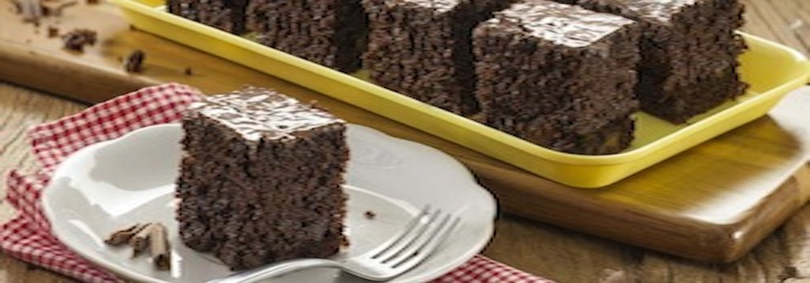

Receita para bolo de chocolate
Receita simples e facil para o bolo mais querido dos brasileiros

Ingredientes
- massa
- 4 colheres de (sopa) de choicolate em pó
- 2 colheres de (sopa) de manteiga
- 3 chicaras de (chá) de farinha de trigo
- 4 ovos
- 2 colheres de (sopa) de fermento
- 2 chicaras de (chá) de leite
- 3 colheres de (sopa) de acúcar
Modo de fazer
- bata por 5 minutos em um liquidificador: ovos, chocolate em pó, manteiga, farinha de trigo, açucar e leite
- adicione o fermento e misture com uma espátula delicadamente
- em uma forma untada, despeje a massa e asse em forno médio (180 C) preaquecido por 40 minutos, usar forma alta para essa receita